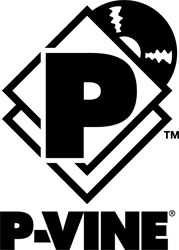

홈 > 브랜드 매거진 > Checker
Checker
체커 레코드(Checker Records)는 1952년 시카고에서 체스(Chess) 형제가 세운 체스 레코드의 자회사 레이블이다. 시카고 블루스·R&B의 명반을 다수 남겼으나 1971년 운영을 마쳤다.
산업 분야 미디어·엔터테인먼트 · 공개 등급 디렉토리 · 브랜드 평가 3.2 ★
한눈에 보는 브랜드
체커 레코드(Checker Records)는 1952년 시카고에서 체스(Chess) 형제가 세운 체스 레코드의 자회사 레이블이다. 시카고 블루스·R&B의 명반을 다수 남겼으나 1971년 운영을 마쳤다.
브랜드 관점
체커 레코드는 체스 레코드의 자회사로 시카고 블루스·R&B를 대표한 레이블이었다. 설립·운영 주체, 주력 장르, 대표 아티스트를 함께 보면 미디어·엔터테인먼트 안에서의 위치가 또렷해진다.
시작과 성장
1952년 레너드·필 체스 형제가 체스 레코드의 자회사로 시카고에서 설립했다. 리틀 월터, 보 디들리 등 시카고 블루스·R&B의 핵심 아티스트를 발매했으나 1969년 GRT에 매각되고 1971년 사라졌다.
브랜드 아이덴티티
Checker의 아이덴티티는 브랜드명, 로고 사용 여부, 업종 언어, 국가적 배경을 중심으로 정리됩니다. 공개 로고 자산은 추후 권리 확인 후 보강할 수 있도록 텍스트 메타데이터 중심으로 관리합니다.
확장 지식
시카고 블루스·R&B를 대표했으며 1971년 운영을 마쳤다.
제품과 서비스
블루스·R&B·두왑 음반을 발매했다. 리틀 월터, 보 디들리 등이 대표 아티스트다.
사람들
레너드·필 체스 형제가 1952년 체스 레코드 자회사로 설립했다.
현재 상태
타임라인
정리된 연도형 이벤트가 없습니다.
BI/CI 변천사
확인된 BI/CI 이미지가 아직 없습니다.
함께 읽을 브랜드
트릭스 레코드(Trix Records)는 1972년 피트 라우리가 미국에서 설립한 전통 블루스 레이블이다. 피드몬트 블루스 등 전통 블루스·포크의 필드 레코딩을 남긴...
 미디어·엔터테인먼트 · 디렉토리Yazoo Records
미디어·엔터테인먼트 · 디렉토리Yazoo Records야주 레코드(Yazoo Records)는 1968년 수집가 닉 펄스가 미국에서 설립한 전전(戰前) 블루스 재발매 레이블이다. 1920~30년대 블루스 녹음을 복각해...
 미디어·엔터테인먼트 · 디렉토리DJM Records
미디어·엔터테인먼트 · 디렉토리DJM RecordsDJM 레코드(DJM Records)는 1969년 영국에서 음악 출판사 딕 제임스 뮤직 산하로 만들어진 음반 레이블이다. 엘튼 존의 초기 영국 음반을 발매한 것으로...
주빌리 레코드(Jubilee Records)는 1946년 미국 뉴욕에서 설립된 R&B·팝 레이블이다. 두왑·R&B의 명반을 남겼으나 1970년 매각되며 사라졌다.

미디어·엔터테인먼트 · 디렉토리P-Vine RecordsP-바인 레코드(P-Vine Records)는 1976년 일본에서 출범한 음반 레이블이다. 블루스·R&B 리이슈로 출발해 재즈·펑크 등으로 확장한 일본의 독립 레이블...
미디어·엔터테인먼트 · 디렉토리Uni유니 레코드(Uni Records)는 1966년 MCA가 미국에서 설립한 음반 레이블이다. 닐 다이아몬드와 엘튼 존의 미국 데뷔 음반을 발매했으나 1971년 MCA...
 미디어·엔터테인먼트 · 디렉토리Adeline Records
미디어·엔터테인먼트 · 디렉토리Adeline Records애들린 레코드(Adeline Records)는 1997년 미국 캘리포니아 오클랜드에서 설립된 펑크·록 레이블이다. 그린데이의 빌리 조 암스트롱 등이 공동 설립했으나...
알라딘 레코드(Aladdin Records)는 1945년 메스너 형제가 미국 로스앤젤레스에서 설립한 R&B·블루스 레이블이다. 찰스 브라운·라이트닝 홉킨스 등을 배출...